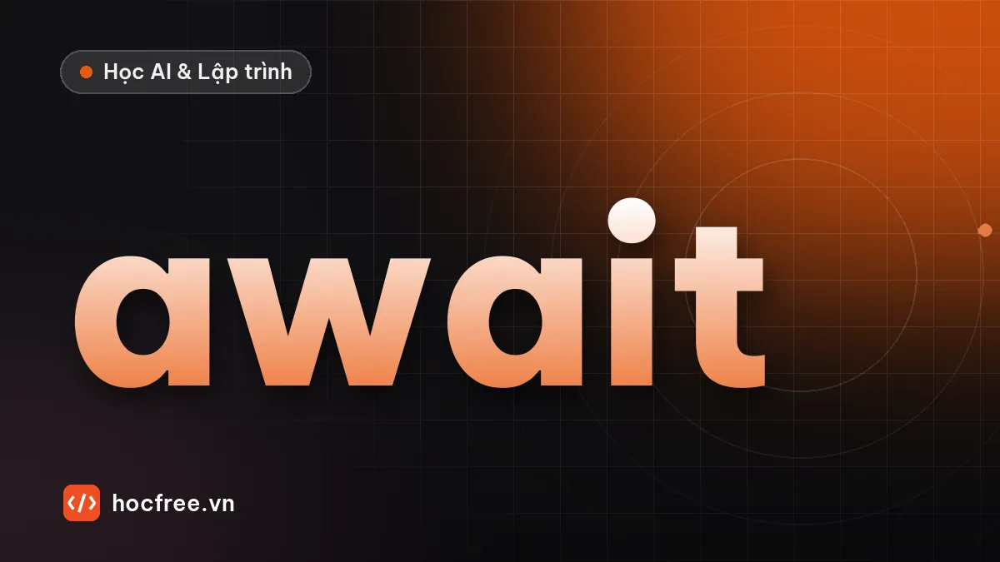

asyncio trong Python: async, await, gather, TaskGroup, httpx
Lập trình bất đồng bộ: event loop, coroutine, await, gather, TaskGroup, Semaphore, timeout và gọi HTTP đồng thời bằng httpx.

Học xong bài này, bạn sẽ
- Hiểu event loop, coroutine, await
- Chạy nhiều tác vụ đồng thời bằng gather, TaskGroup, giới hạn bằng Semaphore
- Gọi HTTP bất đồng bộ bằng httpx
Nên học trước: Đồng thời với thread, process và GIL
Nội dung bài viết
Thread giải quyết tốt việc chờ I/O với vài chục tác vụ. Nhưng một máy chủ web phải giữ hàng nghìn kết nối cùng lúc, mỗi kết nối phần lớn thời gian chỉ ngồi chờ; một luồng cho mỗi kết nối thì quá tốn tài nguyên. asyncio chạy hàng nghìn tác vụ chờ đồng thời trong một luồng duy nhất bằng cú pháp async/await. Đây là nền tảng của FastAPI, httpx, và phần lớn thư viện mạng hiện đại.
1. Coroutine, await và event loop
import asyncio
import time
async def nau(mon: str, phut: float) -> str: # async def: định nghĩa coroutine
print(f"Bắt đầu {mon}")
await asyncio.sleep(phut) # await: "chờ ở đây, trong lúc đó làm việc khác"
print(f"Xong {mon}")
return mon
async def main() -> None:
t = time.perf_counter()
ket_qua = await asyncio.gather(nau("cơm", 0.3), nau("canh", 0.2), nau("cá", 0.1))
print(ket_qua, f"{time.perf_counter() - t:.1f} s")
asyncio.run(main()) # tạo event loop và chạy coroutine chínhBắt đầu cơm
Bắt đầu canh
Bắt đầu cá
Xong cá
Xong canh
Xong cơm
['cơm', 'canh', 'cá'] 0.3 sasync defđịnh nghĩa một coroutine: gọinau("cơm", 0.3)chưa chạy gì, chỉ tạo đối tượng coroutine.awaitchạy coroutine và tạm dừng hàm hiện tại cho đến khi có kết quả. Trong lúc tạm dừng, event loop (vòng lặp sự kiện) chuyển sang chạy coroutine khác đang sẵn sàng.asyncio.gatherchạy nhiều coroutine đồng thời và trả kết quả theo đúng thứ tự truyền vào. Ba món nấu cùng lúc: tổng 0,3 giây (món lâu nhất) thay vì 0,6 giây.asyncio.run(main())là điểm vào duy nhất, gọi một lần ở cấp cao nhất của chương trình.
Hình dung một đầu bếp (một luồng) nấu ba món: đặt nồi cơm lên bếp (await) rồi quay sang nấu canh, không đứng nhìn nồi cơm. Chỉ khi ba món đều đang chờ chín, đầu bếp mới rảnh.
2. Quy tắc quan trọng nhất: đừng chặn event loop
import asyncio
import time
async def sai() -> None:
time.sleep(0.2) # hàm đồng bộ: CHẶN cả event loop, không ai chạy được
async def dung() -> None:
await asyncio.sleep(0.2) # nhường event loop trong lúc chờ
async def do(ham) -> float:
t = time.perf_counter()
await asyncio.gather(*(ham() for _ in range(5)))
return time.perf_counter() - t
print(f"time.sleep: {asyncio.run(do(sai)):.1f} s")
print(f"asyncio.sleep: {asyncio.run(do(dung)):.1f} s")time.sleep: 1.0 s
asyncio.sleep: 0.2 sasyncio là hợp tác: coroutine chỉ nhường quyền tại các điểm await. Gọi hàm đồng bộ chậm (time.sleep, requests.get, truy vấn CSDL đồng bộ, tính toán nặng) bên trong async def sẽ đóng băng mọi tác vụ khác. Vì vậy trong code bất đồng bộ phải dùng thư viện bất đồng bộ: httpx.AsyncClient thay cho requests, asyncio.sleep thay cho time.sleep. Bắt buộc phải gọi hàm đồng bộ thì đẩy nó sang luồng: await asyncio.to_thread(ham_dong_bo, ...).
Đây cũng là lý do ở chặng 9 các endpoint dùng def thường: SQLAlchemy đồng bộ, và FastAPI tự chạy endpoint def trong nhóm luồng riêng. Viết async def mà gọi Session đồng bộ bên trong sẽ chặn cả máy chủ.
3. TaskGroup, timeout và Semaphore
import asyncio
async def lay(i: int, gioi_han: asyncio.Semaphore) -> str:
async with gioi_han: # tối đa N tác vụ cùng lúc vào đây
await asyncio.sleep(0.1 if i != 3 else 5) # tác vụ số 3 treo lâu
return f"việc {i}"
async def lay_co_han(i: int, gioi_han: asyncio.Semaphore) -> str:
try:
async with asyncio.timeout(0.5): # quá 0,5 s thì hủy (Python 3.11+)
return await lay(i, gioi_han)
except TimeoutError:
return f"việc {i}: quá thời gian"
async def main() -> None:
gioi_han = asyncio.Semaphore(2)
async with asyncio.TaskGroup() as tg: # Python 3.11+
cac_viec = [tg.create_task(lay_co_han(i, gioi_han)) for i in range(5)]
print([v.result() for v in cac_viec])
asyncio.run(main())['việc 0', 'việc 1', 'việc 2', 'việc 3: quá thời gian', 'việc 4']asyncio.TaskGroup(Python 3.11+) là cách hiện đại để chạy nhiều tác vụ: ra khỏi khốiasync withthì mọi tác vụ đã xong; nếu một tác vụ ném lỗi, các tác vụ còn lại bị hủy và lỗi được báo ra (dạngExceptionGroup).gathervẫn dùng tốt cho trường hợp đơn giản.asyncio.timeout(giay)hủy khối lệnh nếu quá hạn và némTimeoutError. Luôn đặt giới hạn thời gian khi gọi mạng.asyncio.Semaphore(2)giới hạn số tác vụ chạy đồng thời trong khốiasync with: tránh mở 10.000 kết nối cùng lúc tới một máy chủ.
4. Gọi HTTP bất đồng bộ với httpx
Kiểm tra 10 URL, tối đa 3 kết nối cùng lúc, mỗi URL tối đa 3 giây, URL lỗi không làm hỏng URL khác. httpx đã được cài kèm fastapi[standard], hoặc uv add httpx.
# (minh họa) cần mạng; thời gian phụ thuộc đường truyền
import asyncio
import time
import httpx
URLS = ["https://www.python.org", "https://docs.python.org/3/", "https://pypi.org",
"https://fastapi.tiangolo.com", "https://docs.astral.sh/uv/", "https://httpbin.org/status/404",
"https://khong-ton-tai.vi-du.invalid", "https://httpbin.org/delay/5", "https://github.com",
"https://www.wikipedia.org"]
async def kiem_tra(client: httpx.AsyncClient, gioi_han: asyncio.Semaphore, url: str) -> tuple[str, str]:
async with gioi_han:
try:
async with asyncio.timeout(3):
r = await client.get(url, follow_redirects=True)
return url, str(r.status_code)
except TimeoutError:
return url, "quá thời gian"
except httpx.HTTPError as e:
return url, f"lỗi {type(e).__name__}"
async def main() -> None:
gioi_han = asyncio.Semaphore(3)
async with httpx.AsyncClient(headers={"User-Agent": "hoc-python/1.0"}) as client:
async with asyncio.TaskGroup() as tg:
viec = [tg.create_task(kiem_tra(client, gioi_han, u)) for u in URLS]
for v in viec:
url, kq = v.result()
print(f"{kq:<16} {url}")
t = time.perf_counter()
asyncio.run(main())
print(f"{time.perf_counter() - t:.1f} s")200 https://www.python.org
200 https://docs.python.org/3/
200 https://pypi.org
200 https://fastapi.tiangolo.com
200 https://docs.astral.sh/uv/
404 https://httpbin.org/status/404
lỗi ConnectError https://khong-ton-tai.vi-du.invalid
quá thời gian https://httpbin.org/delay/5
200 https://github.com
200 https://www.wikipedia.org
3.4 sMột AsyncClient dùng chung cho mọi request (giữ và tái sử dụng kết nối, như Session của requests). Lỗi được bắt bên trong từng tác vụ nên TaskGroup không bị hủy giữa chừng. httpbin.org/delay/5 trả lời sau 5 giây, bị cắt ở giây thứ 3. Tổng thời gian khoảng 3,4 giây cho 10 URL, chủ yếu do URL chậm nhất.
ThreadPoolExecutor đơn giản hơn, không phải đổi thư viện. Ứng dụng mạng có hàng trăm, hàng nghìn kết nối đồng thời, hoặc đã dùng framework bất đồng bộ (FastAPI với thư viện async, bot chat, websocket): asyncio. Đừng trộn lẫn tùy tiện; nhất quán trong một chương trình sẽ dễ bảo trì hơn.Tóm tắt
async deftạo coroutine;awaitchờ và nhường event loop;asyncio.run(main())là điểm vào.- Không gọi hàm đồng bộ chậm trong
async def; dùng thư viện async hoặcasyncio.to_thread. gather,TaskGroupchạy đồng thời;asyncio.timeoutgiới hạn thời gian;Semaphoregiới hạn số tác vụ.httpx.AsyncClientdùng chung cho các request bất đồng bộ.
Bài tập
Bài 1. Kiểm tra URL còn sống
Dùng chương trình ở mục 4 với danh sách 10 URL của riêng bạn, giới hạn 3 kết nối. Đo thời gian khi đổi giới hạn thành 1 và 10, giải thích kết quả.
Xem gợi ý
Với Semaphore(1), mọi request chạy lần lượt: thời gian xấp xỉ tổng thời gian các URL (giống chạy tuần tự). Với Semaphore(10), cả 10 chạy cùng lúc: thời gian xấp xỉ URL chậm nhất (bị chặn ở 3 giây bởi timeout). Giá trị 3 nằm giữa: đủ nhanh mà không dồn quá nhiều kết nối vào cùng một máy chủ.
Bài 2. Timeout từng tác vụ
Viết chương trình chạy 6 tác vụ giả lập với thời gian chờ [0.1, 0.4, 2.0, 0.2, 3.0, 0.3] giây, mỗi tác vụ tối đa 1 giây; tác vụ quá hạn ghi là "quá thời gian". Tổng thời gian phải khoảng 1 giây.
Xem đáp án
import asyncio
import time
async def tac_vu(i: int, giay: float) -> str:
try:
async with asyncio.timeout(1):
await asyncio.sleep(giay)
return f"#{i} xong sau {giay}s"
except TimeoutError:
return f"#{i} quá thời gian"
async def main() -> None:
t = time.perf_counter()
async with asyncio.TaskGroup() as tg:
viec = [tg.create_task(tac_vu(i, g)) for i, g in enumerate([0.1, 0.4, 2.0, 0.2, 3.0, 0.3])]
for v in viec:
print(v.result())
print(f"Tổng: {time.perf_counter() - t:.1f} s")
asyncio.run(main())#0 xong sau 0.1s
#1 xong sau 0.4s
#2 quá thời gian
#3 xong sau 0.2s
#4 quá thời gian
#5 xong sau 0.3s
Tổng: 1.0 sTác vụ 2 và 4 bị hủy ở giây thứ nhất thay vì chờ 2 và 3 giây. Không có timeout, tổng thời gian sẽ là 3 giây; trong hệ thống thật, một dịch vụ chậm không được phép kéo chậm cả chương trình.
Nguồn tham khảo: asyncio; Coroutines and Tasks (TaskGroup, timeout); HTTPX: Async Support; FastAPI: Concurrency and async / await.
Bài tập thực hành
- Viết chương trình async kiểm tra 10 URL còn sống không, giới hạn 3 kết nối cùng lúc.
- Thêm timeout cho từng URL bằng asyncio.timeout, URL quá hạn ghi là 'quá thời gian'.
Làm xong bài tập mới chuyển sang bài tiếp theo: tự viết code là cách duy nhất để nhớ lâu.